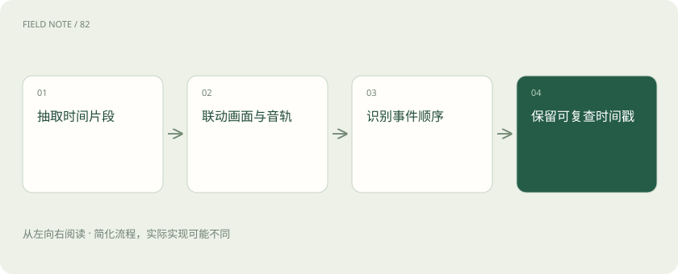

先读哪些知识
先用一个类比理解
像看监控，几张截图可能看见人，却错过先后发生的动作。
类比只帮助建立直觉，不等同于技术的完整机制。
一图看懂

概念边界
视频包含画面随时间变化的信息，也可能带音轨和字幕。逐帧图像描述能识别对象，却可能遗漏动作顺序、持续时间和镜头间关系。均匀抽帧容易错过很短但关键的事件。
内部怎样运作
采样密度、分辨率与视频长度共同决定输入代价。可以先定位疑似事件区间，再精读局部片段，并保留时间戳便于复核。字幕与画面冲突时需要明确各自来源，不能自动合并成同一事实。
把机制放进具体场景
判断工人是否先断电再开盖，需要比较两个事件顺序。若抽帧只选到开盖前后，短暂的断电动作可能完全没被看到。可以先粗定位作业区间，再加密采样，但没看到动作不能直接断言动作没发生。
取舍与容易忽略的限制
视频证据需要把内容与时间绑定。不同镜头可能来自不同位置或时刻，剪辑顺序也未必等于事件发生顺序。字幕可能是后加说明，音轨也可能延迟，因此不能把它们自动视为同一来源的同步事实。报告关键动作时应提供可复查区间，并说明抽样是否足以支持关于先后、持续或缺失的判断。
放进真实场景
SCENARIO
视频字幕写着“阀门已关闭”，画面却只显示操作员走近设备。系统应区分字幕陈述与可见动作，不能直接把字幕当成画面已经证实的事实。
别踩这个误区
视频生成追求时间一致性，视频理解追求证据解释，两种任务不能用同一分数概括。
想一想
均匀抽帧没有看到关键动作，能否证明它没发生？
不能，动作可能落在抽样间隔内，需加密检查或报告证据不足。
关联阅读
资料与边界
本文为原创知识讲解。类比和图示经过简化；示例数字不代表实测或报价。整理日期：2026-11-04。文末列出对应技术的原始资料，具体功能与版本支持请以原文为准。